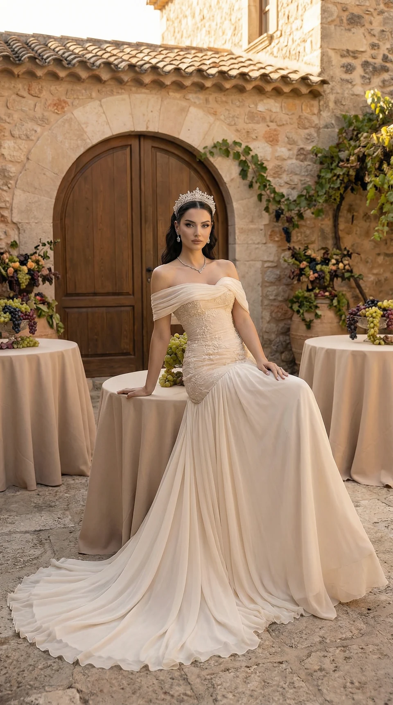
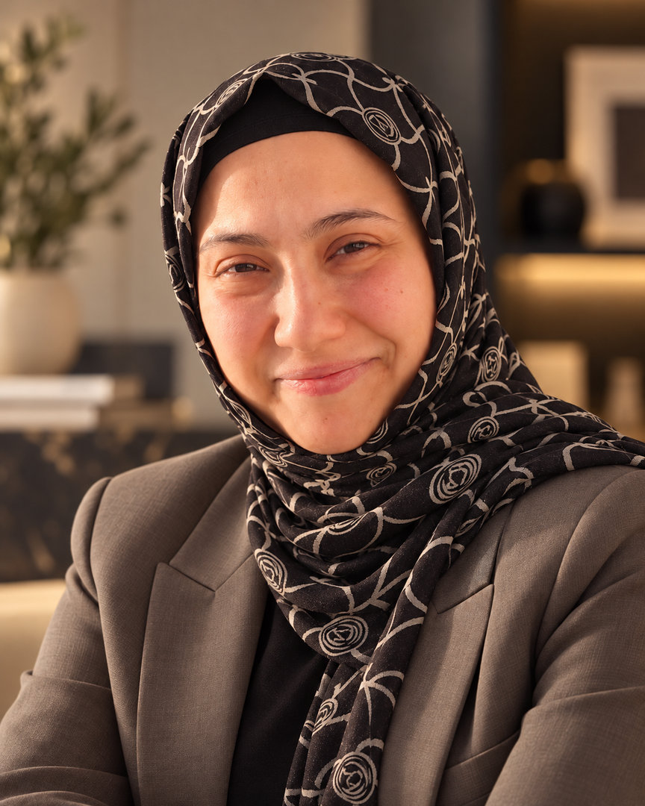

Altın Saatte Bir Hikâye
Bridal & Wedding · Bağımsız konsept
Melike Gümüş · AI Creative Studio
Gelinlik, moda, güzellik ve takı dünyası için yapay zekâ destekli kreatif görseller ve sinematik reklam filmleri.

BAĞIMSIZ AI BRIDAL KONSEPTİ — 0101 / Seçili çalışmalar
Bir atmosfer, bir detay, bir hikâye.
Yapay zekâyla oluşturduğum görsel dünyalardan bir seçki.
Bu seçkideki tüm çalışmalar, Melike Gümüş tarafından yapay zekâyla oluşturulmuş bağımsız konsept üretimleridir. Görünen ürün ve marka adları, resmî bir marka iş birliği veya müşteri ilişkisi ifade etmez.
02 / Hizmetler
Konseptten görsel anlatıma; projenizin ihtiyaçlarına göre şekillenen kreatif üretim.
Ürünlerin ve markaların hikâyesini ışık, atmosfer ve hareketle anlatan yapay zekâ destekli sinematik reklam videoları.
Moda koleksiyonları, gelinlikler ve stil odaklı projeler için estetik bütünlüğü öne çıkaran görsel ve video üretimi.
Çanta, takı, parfüm, kozmetik ve ayakkabı gibi ürün grupları için biçim, doku ve detay odaklı görseller.
Dijital karakterler ve yapay zekâ modelleriyle projenin görsel dünyasına uygun konsept kampanya içerikleri.
Instagram Reels, Story ve dijital reklam alanları için yaratıcı görsel ve video içerikleri.
Proje konsepti, görsel stil, sahne planlama, ışık atmosferi ve hikâye anlatımını şekillendiren yaratıcı yaklaşım.

03 / Stüdyonun arkasında
Ben Melike Gümüş, Gümüş AI Studio’nun kurucusuyum. Gelinlik, moda, güzellik ve takı dünyasına yönelik yapay zekâ destekli kreatif görseller ve sinematik reklam filmleri üretiyorum.
Her çalışmada ışık, doku ve kompozisyonu bir araya getirerek estetik bütünlüğü olan, hikâyesi güçlü görsel konseptler tasarlıyorum.
Melike Gümüş
Instagram’da Gör ↗04 / Yaratıcı süreç
Her proje, kendine ait bir görsel dünya ve o dünyaya uygun bir üretim süreciyle şekillenir.
Markanızı, hedef kitlenizi ve içeriğin kullanım alanını birlikte netleştiririz.
Referanslar, görsel stil, ışık ve sahne yaklaşımıyla yaratıcı yönü belirleriz.
İçerikleri belirlenen brief doğrultusunda üretir, bir tur revizyonla değerlendiririz.
Onaylanan içerikleri, başlangıçta kararlaştırılan format ve takvime göre teslim ederiz.
05 / Görsel deneyim
Işık, doku ve stilin aynı görsel dünyada buluştuğu bir seçki.
Luxury Fashion · Bağımsız AI konsepti
06 / Neden Gümüş AI Studio?
Konseptten son kareye uzanan tutarlı bir görsel dil.
Ürünün biçimine, dokusuna ve sahnedeki görünümüne gösterilen özen.
İçeriğin fikrini ışık, kompozisyon ve atmosferle ifade eden yaklaşım.
07 / Merak edilenler
Moda, bridal, aksesuar, takı, güzellik ve ürün odaklı yapay zekâ görsel ve video projeleri üzerine çalışıyorum.
Hayır. Buradaki çalışmalar, yaratıcı yaklaşımımı göstermek için yapay zekâyla oluşturduğum bağımsız konsept üretimleridir. Görünen marka adları resmî iş birliği anlamına gelmez.
Markanızı veya ürününüzü, istediğiniz içerik türünü, kullanım alanını, yaklaşık içerik adedini ve hedef tarihinizi e-postayla paylaşabilirsiniz.
İçerik adedi, video süresi, üretim ihtiyaçları ve proje kapsamına göre teklif hazırlanır. Teslim takvimi çalışmaya başlamadan önce birlikte netleştirilir.
Her projeye, onaylanan brief kapsamında 1 tur revizyon dahildir. Değişiklik talepleri tek seferde iletilir. Yeni konsept, ek içerik veya kapsam değişiklikleri ayrıca değerlendirilir.
Görseller kullanım alanına göre JPG veya PNG, videolar MP4 formatında teslim edilir. Dikey, kare veya yatay format ihtiyacı proje başlangıcında belirlenir.
08 / Yeni bir hikâyeye
Markanızı, ürününüzü ve hayal ettiğiniz görsel dünyayı anlatın. Projenizin kapsamını birlikte değerlendirelim.
Melikegumus1694@gmail.comTeklif Al bağlantısı e-posta uygulamanızı açar.